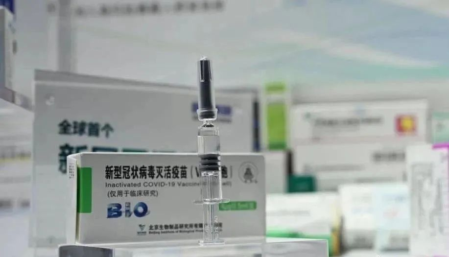
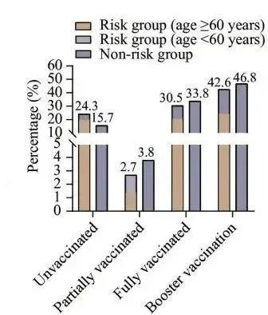
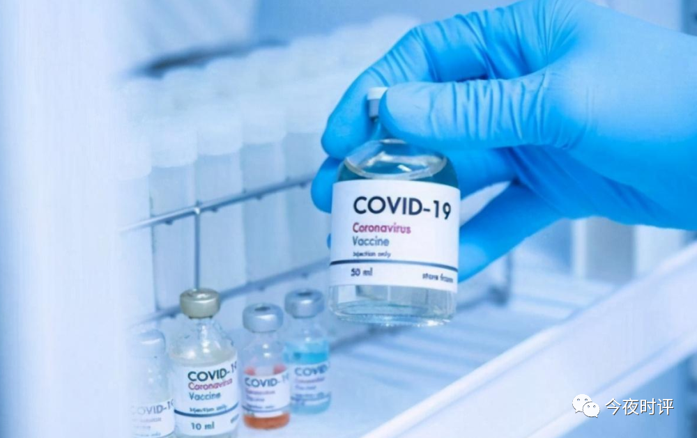
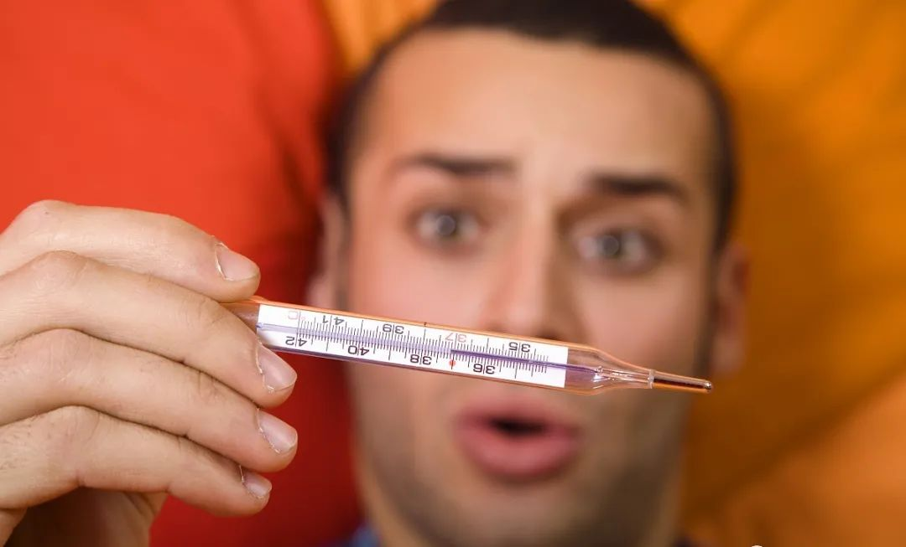
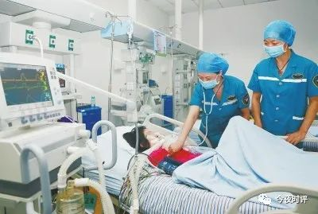

上海疫情数据样本｜得出10项颠覆性结论
财闻观道 2022-12-11 10:45 发表于山东 原文链接(长) 原文链接(短)
**财闻观道**
前沿科技资讯，市场第一动态，有价值的财经聚焦、时政解读、要闻述评、商道经略、美文赏读、音乐视频等，让你足不出户，赏阅天下。
公众号
，
根据参考文献中公布的疫情数据和研究论文，以及上海市的其它疫情数据，归纳出了10项结论，颠覆国人的认知。
**一、国产疫苗防止COVID-19的有效率是12.6%**
上海近6个月的2266个病例，疫苗接种的比例94%左右；接种疫苗覆盖人群占全市常住人口的93%；
我们用v表示有效率，v是英文“疫苗”vaccine的首字母；用i表示无效率，i是英文“无效”ineffectiveness的首字母。算式如下：
i = 94% x 93% = 87.4%；
v = 1–87.4% = 12.6%。
接种新冠疫苗对防止COVID-19的有效率是12.6%。这个结果与科兴公司宣称的疫苗有效率91%，真具有天壤之别！

**二、接种疫苗次数与奥密克戎感染率的关联**
关于奥密克戎毒株感染者两组（高危组和非高危组）的症状与疫苗接种的关系，研究报告给出了如下简明扼要的直方图。详见参考文献\[3\]。

按照常规，“部分接种”者只接种1剂疫苗；“全程接种”者接种了2剂疫苗；“打了疫苗加强针”则接种了3剂疫苗。
根据上面的插图和数据，进行简单的算术运算，得到：
非重症奥密克戎毒株感染者总数33816人，未接种疫苗的人数为6105人，占18%；接种了疫苗的人数为27711人，占82%。
在接种了疫苗的人群中：
- 接种了1剂疫苗者，1153人，占3.4%；
- 接种了2剂（全程接种）疫苗者，11121人，占32.9%；
- 接种了3剂（加强针）疫苗者，15437人，占45.7%。
这样，我们得到了关于疫苗接种与奥密克戎感染的关系的结论如下：
- 不接种新冠疫苗，不容易被奥密克戎毒株感染；
- 接种益喵者容易被奥密克戎毒株感染；接种疫苗者占感染者总数的82%。
- 接种疫苗次数越多，奥密克戎感染率越高；打加强针者占感染者总数的46%。

**三、上海市核酸检测阳性总数的98%无症状**
张文宏团队研究的样本都是确诊病例。可是，在“确诊病例”中竟然大多数无症状！在研究样本的高危组和非高危组中，确诊的奥密克戎病例无症状感染者的比例很高：
- 高危组，无症状感染者为76.2%；
- 非高危组，无症状感染者为78.6%。
这就是说，确诊的33816名奥密克戎非重症感染者中，无症状感染者约77%。上海市真正确诊的奥密克戎本土感染者只占核酸检测阳性者的2%，无症状感染者占98%。

**四、奥密克戎的轻症感染者，有发烧症状的只占4%**
奥密克戎的轻症感染者的症状很轻。对于所有轻症感染者，普遍存在的是上呼吸道症状：
最常见的症状是咳嗽（干咳）和咳痰，占19.0%；其次是疲劳，占5.2%；只有4%的轻症感染者出现发烧。
**五、COVID-19患者占确诊奥密克戎感染者的0.29%**
张文宏团队研究的样本总体是33816个非重症奥密克戎毒株感染者。经过严格的检测，确定有新冠肺炎（COVID-19）症状的99人，占0.29%。
**六、非重症奥密克戎感染者转化为重症的概率为0.065%**
样本总体是33816个，开始的时候都是非重症奥密克戎毒株感染者。在研究期间，有22人发展为重症，总体重症率为0.065%。
**七、非高危组奥密克戎感染者转化为重症的概率为0%**
将入院初始的确诊奥密克戎毒株感染者33816名分为两组：高危组（风险组），包括重型、危重型患者9260名，占27.4%；非高危组（非风险组）24556名，占72.6%。非高危组24556人转化为重症的人数为0，即重症率为0%。
**八、全部奥密克戎毒株感染者的死亡率为0%**
确诊奥密克戎毒株感染者共计33816名。到研究项目结束时，没有任何患者死亡。这说明：全部奥密克戎毒株感染者的死亡率为0%。
所有死亡病例均合并基础疾病，死亡的直接原因为基础疾病或恶性肿瘤。换句话说，上海奥密克戎疫情期间，由于感染奥密克戎而得新冠肺炎（Covid-19）死亡的人数为0，即死亡率为0%。详见参考文献\[7\]。

**九、中青年比年长者更容易感染奥密克戎**
样本总体33816人中， **3.7%的** 感染者小于18岁。
样本总体33816人中， **76.7%** 位于18-59岁间，年龄跨度41年。
样本总体33816人中， **16.5%** 的感染者为60岁以上的年长者，年龄跨度24年（上海市平均寿命84岁）。
按照年龄跨度24年计算，中青年（18-59岁间）被奥密克戎感染的比例为44.9%，60岁以上的年长者被奥密克戎感染的比例为16.5%。
因此，中青年（18-59岁间）比60岁以上的年长者更容易被奥密克戎毒株感染，前者是后者的2.72倍。但是高危组中青年感染者的重症率比年长者的重症率低很多。
 **十、核酸检测阳性者转阴性时间平均6天**
对于奥密克戎毒株感染，核酸检测阳性者，包括无症状感染者和非高危的确诊病例，平均核酸转阴时间为6天。其中，高龄人群、具有合并症状者、存在初始症状者会延长核酸转阴时间；而身体健康的中青年人平均转阴时间为5天。
**参考文献：**
\[1\] 《中国基金报》记者：《张文宏最新研判来了》， 2022年3月8日。网页链接：https://m.thepaper.cn/baijiahao\_17011953
\[2\] 国务院联防联控机制新闻发布会，2022年7月23日，中国政府网，链接如下：http://www.gov.cn/xinwen/gwylflkjz207/mobile.htm
\[3\] Wenhong Zhang (张文宏), Xin Ma (马昕), et al: “Preplanned Studies: Dynamic Disease Manifestations Among Non-Severe COVID-19 Patients Without Unstable Medical Conditions: A Follow-Up Study—Shanghai Municipality, China, March 22-May 03,2022”. Link:
https://weekly.chinacdc.cn/en/article/doi/10.46234/ccdcw2022.115
\[4\] 张文宏，蔡健鹏，艾静文，王森，张昊澄：《张文宏团队：非高危人群感染新冠重症率为0%，防疫需保护脆弱群体》，搜狐医药，2022年6月20日。网页链接：http://news.sohu.com/a/559003643\_359980
\[5\] 吴国发：《张文宏研究报告公布真实数据，得出颠覆国人认知的结论》，知乎，2022年6月30日。网页链接：https://zhuanlan.zhihu.com/p/536071222
\[6\] 吴国发：《张WH研究报告公布真实数据，得出颠覆国人认知的结论》，微博，2022年6月30日。网页链接：https://weibo.com/ttarticle/p/show?id=2309404786209409859795
\[7\] 朱紫鼎：《2022年春夏上海588例新冠感染死者分析，信息量极大》，腾讯QQ，2022年11月14日。网页链接：https://mp.weixin.qq.com/s/xPVq2244\_XFSJF6hzWFZ-Q
\[8\] “复禾”网编辑：《北京科兴中维新冠益喵的有效率是多少 北京生物和北京科兴哪款更安全》，“复禾”医疗动态，2021年8月10日。网页链接：https://jianfei.fh21.com.cn/yldt/6872184.html
文章来源｜俄卫星社 路透社等
图片来源｜ 网络
**财闻观道**
前沿科技资讯，市场第一动态，有价值的财经聚焦、时政解读、要闻述评、商道经略、美文赏读、音乐视频等，让你足不出户，赏阅天下。
公众号
，
**十、核酸检测阳性者转阴性时间平均6天**
对于奥密克戎毒株感染，核酸检测阳性者，包括无症状感染者和非高危的确诊病例，平均核酸转阴时间为6天。其中，高龄人群、具有合并症状者、存在初始症状者会延长核酸转阴时间；而身体健康的中青年人平均转阴时间为5天。
**参考文献：**
\[1\] 《中国基金报》记者：《张文宏最新研判来了》， 2022年3月8日。网页链接：https://m.thepaper.cn/baijiahao\_17011953
\[2\] 国务院联防联控机制新闻发布会，2022年7月23日，中国政府网，链接如下：http://www.gov.cn/xinwen/gwylflkjz207/mobile.htm
\[3\] Wenhong Zhang (张文宏), Xin Ma (马昕), et al: “Preplanned Studies: Dynamic Disease Manifestations Among Non-Severe COVID-19 Patients Without Unstable Medical Conditions: A Follow-Up Study—Shanghai Municipality, China, March 22-May 03,2022”. Link:
https://weekly.chinacdc.cn/en/article/doi/10.46234/ccdcw2022.115
\[4\] 张文宏，蔡健鹏，艾静文，王森，张昊澄：《张文宏团队：非高危人群感染新冠重症率为0%，防疫需保护脆弱群体》，搜狐医药，2022年6月20日。网页链接：http://news.sohu.com/a/559003643\_359980
\[5\] 吴国发：《张文宏研究报告公布真实数据，得出颠覆国人认知的结论》，知乎，2022年6月30日。网页链接：https://zhuanlan.zhihu.com/p/536071222
\[6\] 吴国发：《张WH研究报告公布真实数据，得出颠覆国人认知的结论》，微博，2022年6月30日。网页链接：https://weibo.com/ttarticle/p/show?id=2309404786209409859795
\[7\] 朱紫鼎：《2022年春夏上海588例新冠感染死者分析，信息量极大》，腾讯QQ，2022年11月14日。网页链接：https://mp.weixin.qq.com/s/xPVq2244\_XFSJF6hzWFZ-Q
\[8\] “复禾”网编辑：《北京科兴中维新冠益喵的有效率是多少 北京生物和北京科兴哪款更安全》，“复禾”医疗动态，2021年8月10日。网页链接：https://jianfei.fh21.com.cn/yldt/6872184.html
文章来源｜俄卫星社 路透社等
图片来源｜ 网络
**财闻观道**
前沿科技资讯，市场第一动态，有价值的财经聚焦、时政解读、要闻述评、商道经略、美文赏读、音乐视频等，让你足不出户，赏阅天下。
公众号
，
**十、核酸检测阳性者转阴性时间平均6天**
对于奥密克戎毒株感染，核酸检测阳性者，包括无症状感染者和非高危的确诊病例，平均核酸转阴时间为6天。其中，高龄人群、具有合并症状者、存在初始症状者会延长核酸转阴时间；而身体健康的中青年人平均转阴时间为5天。
**参考文献：**
\[1\] 《中国基金报》记者：《张文宏最新研判来了》， 2022年3月8日。网页链接：https://m.thepaper.cn/baijiahao\_17011953
\[2\] 国务院联防联控机制新闻发布会，2022年7月23日，中国政府网，链接如下：http://www.gov.cn/xinwen/gwylflkjz207/mobile.htm
\[3\] Wenhong Zhang (张文宏), Xin Ma (马昕), et al: “Preplanned Studies: Dynamic Disease Manifestations Among Non-Severe COVID-19 Patients Without Unstable Medical Conditions: A Follow-Up Study—Shanghai Municipality, China, March 22-May 03,2022”. Link:
https://weekly.chinacdc.cn/en/article/doi/10.46234/ccdcw2022.115
\[4\] 张文宏，蔡健鹏，艾静文，王森，张昊澄：《张文宏团队：非高危人群感染新冠重症率为0%，防疫需保护脆弱群体》，搜狐医药，2022年6月20日。网页链接：http://news.sohu.com/a/559003643\_359980
\[5\] 吴国发：《张文宏研究报告公布真实数据，得出颠覆国人认知的结论》，知乎，2022年6月30日。网页链接：https://zhuanlan.zhihu.com/p/536071222
\[6\] 吴国发：《张WH研究报告公布真实数据，得出颠覆国人认知的结论》，微博，2022年6月30日。网页链接：https://weibo.com/ttarticle/p/show?id=2309404786209409859795
\[7\] 朱紫鼎：《2022年春夏上海588例新冠感染死者分析，信息量极大》，腾讯QQ，2022年11月14日。网页链接：https://mp.weixin.qq.com/s/xPVq2244\_XFSJF6hzWFZ-Q
\[8\] “复禾”网编辑：《北京科兴中维新冠益喵的有效率是多少 北京生物和北京科兴哪款更安全》，“复禾”医疗动态，2021年8月10日。网页链接：https://jianfei.fh21.com.cn/yldt/6872184.html
文章来源｜俄卫星社 路透社等
图片来源｜ 网络
**财闻观道**
前沿科技资讯，市场第一动态，有价值的财经聚焦、时政解读、要闻述评、商道经略、美文赏读、音乐视频等，让你足不出户，赏阅天下。
公众号
，